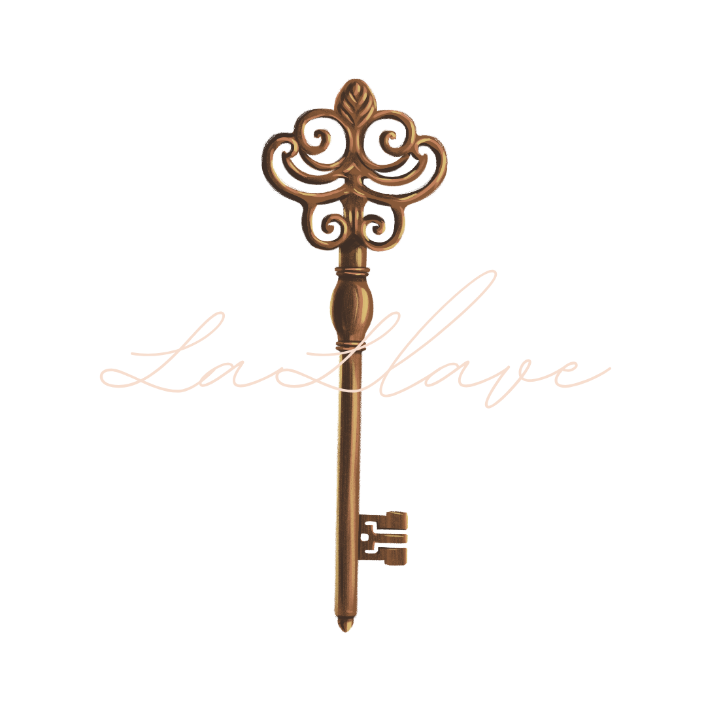
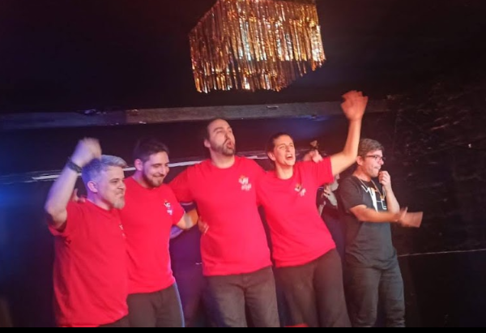
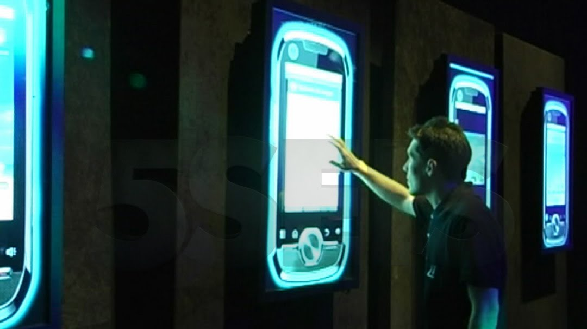

La llave de la co-creación
Gabriel Aufgang · La Llave Cumbre 2026


Una invitación que
no estaba buscando
no estaba buscando
Mi profesor anunció un match de improvisación con público

Algo aparece al conectar
Cuando confiás, aparecen cosas que no sabías que podían pasar
Cada conversación es una escena
Estar disponibles
para lo que aparece
para lo que aportan los demás

Si, dale. Animarse a proponer
Después buscamos cómo hacerlo posible.
La idea del otro
es un regalo
es un regalo
Disponibilidad
↓
Validación
↓
Construcción
↓
Transformación
Vamos a probarlo
Algo que no existía antes
Lo que surgió no estaba en ninguno de nosotros por separado
Dar lugar, cuidar,
dejar crecer
dejar crecer
Algunas semillas necesitan tiempo para germinar
La llave está en
cómo construimos
cómo construimos
aprender de lo que aparece · abrazar lo inesperado · construir con otros